已定（2026-10-16）：按推荐落地。你问 steer 能不能照 Codex 那样做：可以，建议做。回合进行中发出、模型还没读到的消息，不再画在对话里，而是排在贴着输入框上沿的一条托盘里，一行一条：行首的图标说它去哪（ 插进当前回合， 排到下一轮），后面是它现在的状态和能做的事（Steer、撤回）。模型读到它的那一刻，它才进对话，位置就是被读到的位置。
① ⑤ 是现在的真实页面；其余都是同一个真实页面上画出来的效果图：对话和输入框是本分支 Web 代码渲染的，只有托盘是手画进页面的（用页面自己的颜色变量）。
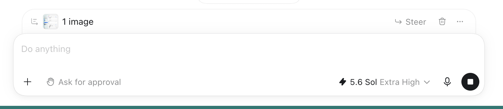
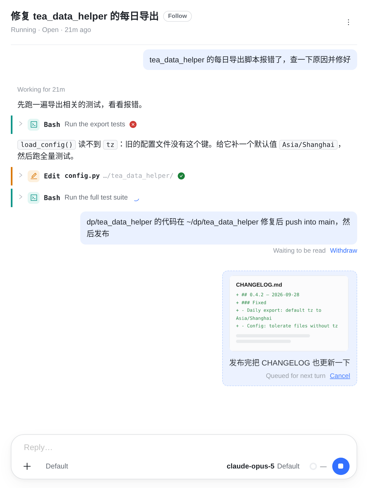
121 插进当前回合的 steer：Waiting to be read Withdraw。2 排到下一轮的消息（Claude 会话里现在少见：Stop 之后发的、错过回合被改排的；Kimi 等引擎上每条都是这样）：虚线框，Queued for next turn Cancel。全量测试一跑十几分钟，这段时间的输出会接在 1 下面，读起来像模型早就看到了它；往上翻一点，两条都不在视线里。
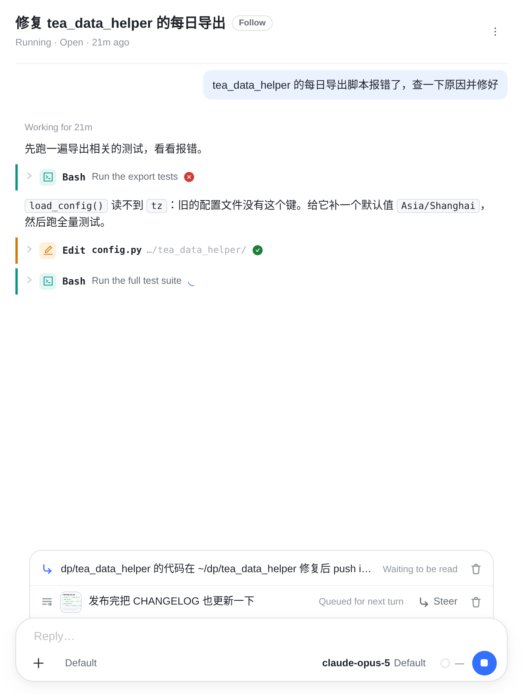
3新增4对话里只剩模型真正读到的东西。3 托盘：第一行是 1（蓝色 ↳，等着被读），第二行是 2（≡，排到下一轮），有图的带缩略图。4 Steer：现在插进当前回合。垃圾桶 = 撤回，文字回到输入框、接在草稿下面（同 10-16 的决定）。一行放不下就省略，悬停（手机上点一下）看全文。
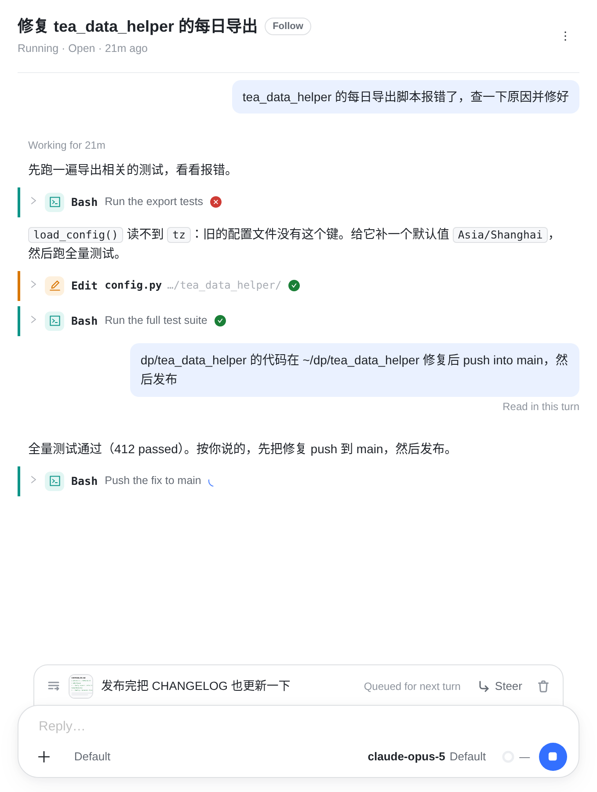
5读到的位置测试跑完，Claude 在这个工具边界读到它：这一行离开托盘，5 气泡出现在测试结果之后，下面写 Read in this turn，接着是模型照它做的事。排队那条还在托盘里，这一轮结束、下一轮开始时才进对话。
现在气泡排在「写进 Claude 的那一刻」，改成排在「Claude 回显的那一刻」：这两个事件 runner 本来就分开发（user 与 user_delivery: acknowledged），客户端换一个来排。
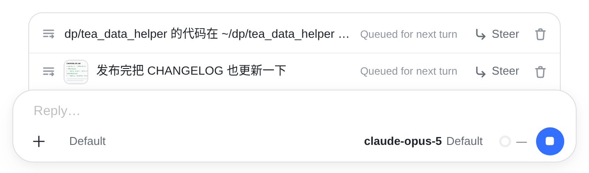
回合进行中发的都先排着，每条都有 Steer；点了才插进当前回合，变成下面的 b（Claude）或 d（Codex）；不点就等这一轮结束，作为下一轮发出。
好处：Codex 会话里 steer 一插进去就收不回（d），排着的时候还能撤回重写。代价：想让模型马上看到，每次都要多点一下；手机上尤其明显。
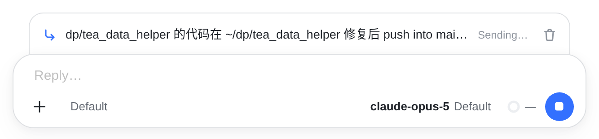
Orbit 收下了，还没交给引擎。垃圾桶：服务器直接删。
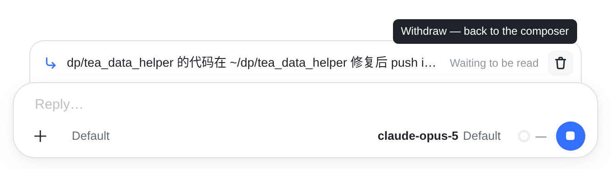
在 Claude 的队列里，模型还没读。悬停垃圾桶：Withdraw — back to the composer。
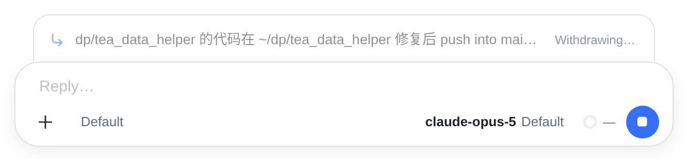
整行变灰、按钮收起，等 Claude 回答（实测 < 10 ms，服务器最多等 15 秒）。删成了这一行就消失，文字回到输入框；来不及照旧提示 Too late to withdraw。
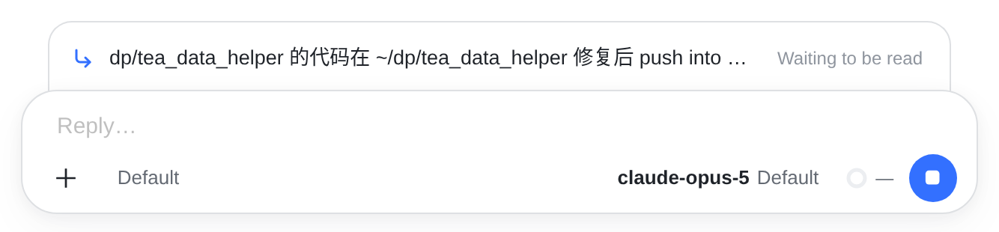
Codex 收下就收不回：没有垃圾桶，只能等它被读（实测有过隔 31 秒才读）。
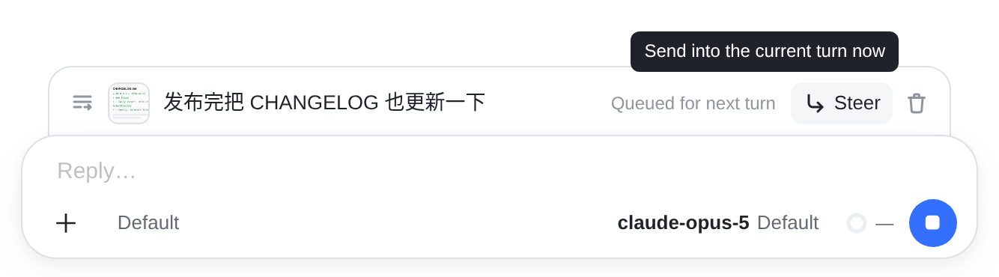
悬停 Steer：Send into the current turn now。点了这一行就变成 b 或 d。
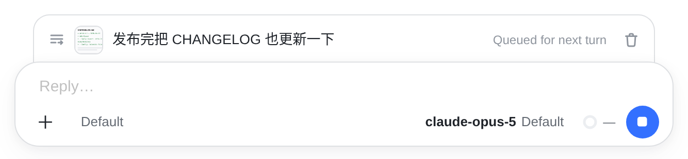
引擎不收 steer，所以没有 Steer，只能撤回（就是现在的 Cancel）。
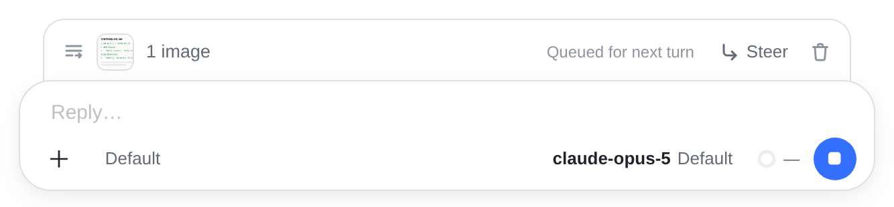
照 Codex：缩略图加 1 image（两张写 2 images）。
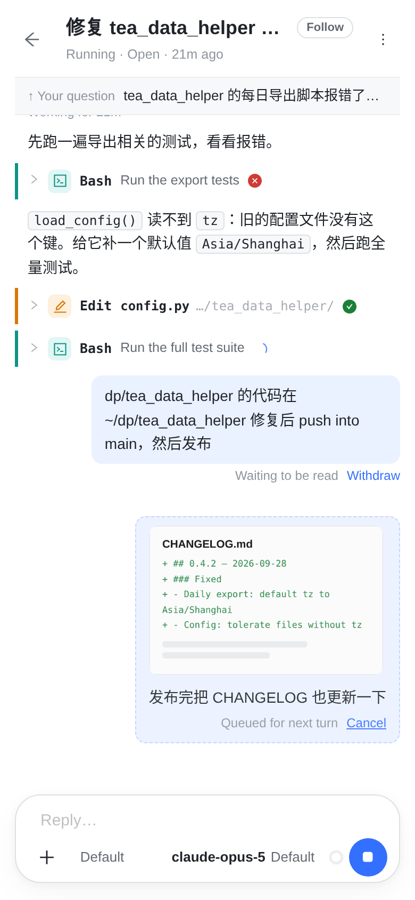
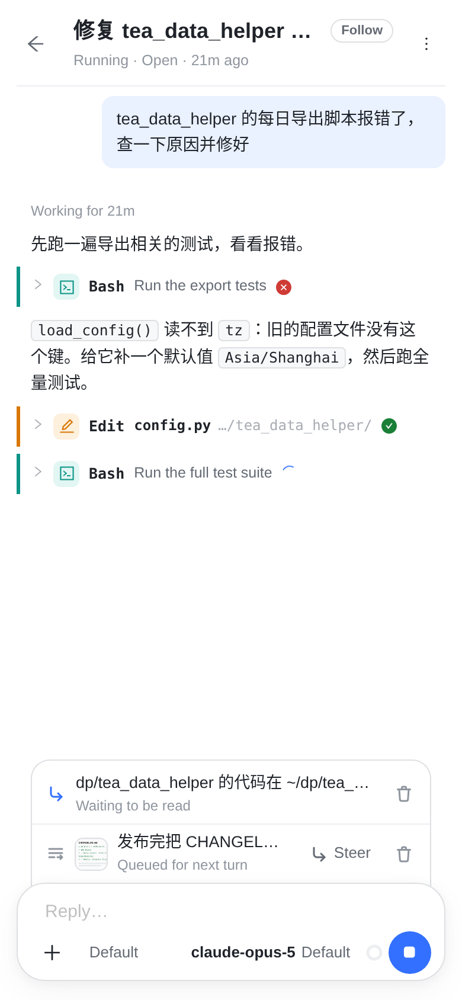
手机上一行放不下文字、状态和按钮：状态挪到文字下面一行，按钮留在右边，每个 36px 见方，手指够得着。托盘比输入框两边各收进 12px（桌面 18px）。
现在 ⑤ 的两条一共占了大半屏，模型的输出被挤到上面；⑥ 里它们只占两行，对话完整地留给模型的输出。
| 这条消息此时 | 放在哪 | 行上能做的 |
|---|---|---|
| Sending… | 托盘 | 撤回 |
| Waiting to be read（Claude） | 托盘 | 撤回（以 Claude 的回答为准） |
| Waiting to be read（Codex） | 托盘 | 无：收不回 |
| Withdrawing… | 托盘（变灰） | 无 |
| Queued for next turn | 托盘 | Claude / Codex 会话：Steer、撤回；其他引擎：撤回 |
| Read in this turn | 对话里，被读到的位置 | 同现在（复制） |
| Not delivered / Couldn't confirm it was read | 对话里，没送到的那一刻的位置 | 同现在：⚠ 和 Put back in the composer |
Transcript.tsx 让 steer 气泡排在它被回显的位置；⌥Enter。DELETE /sessions/:id/turns/:turnId。QueuedTail）同样挪进托盘。